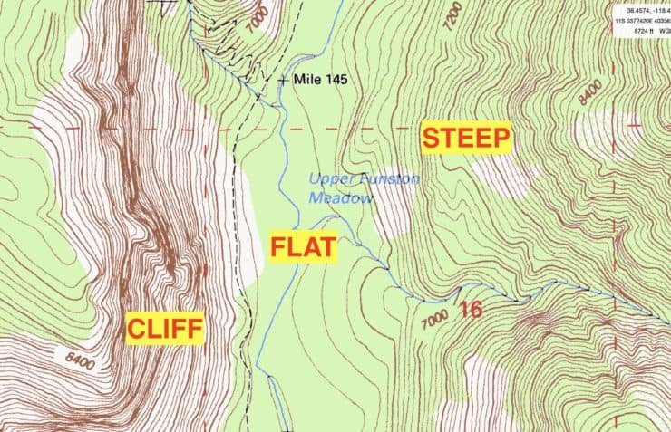
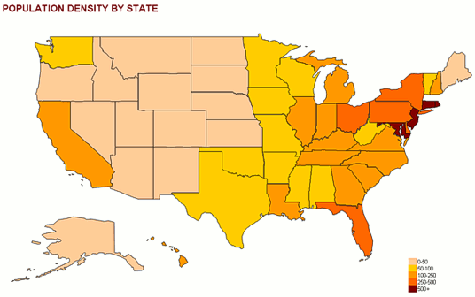
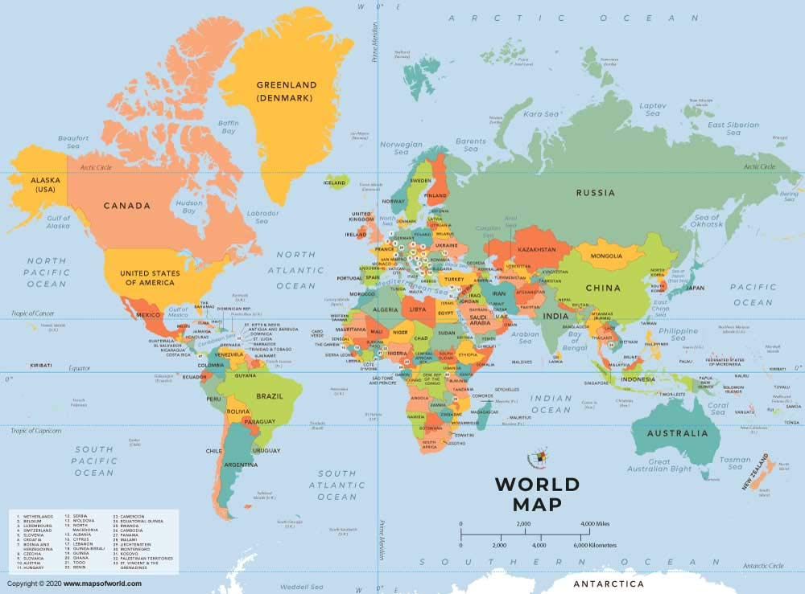
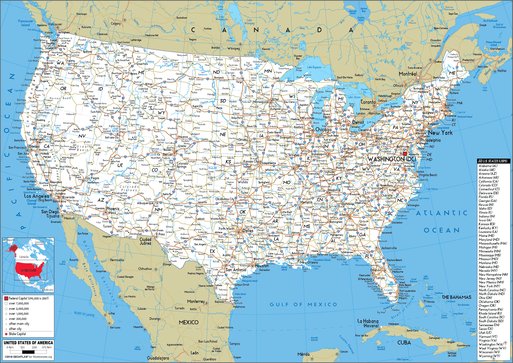
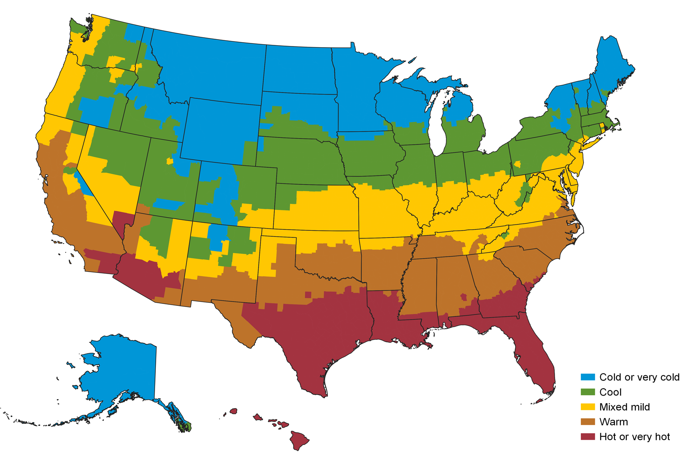
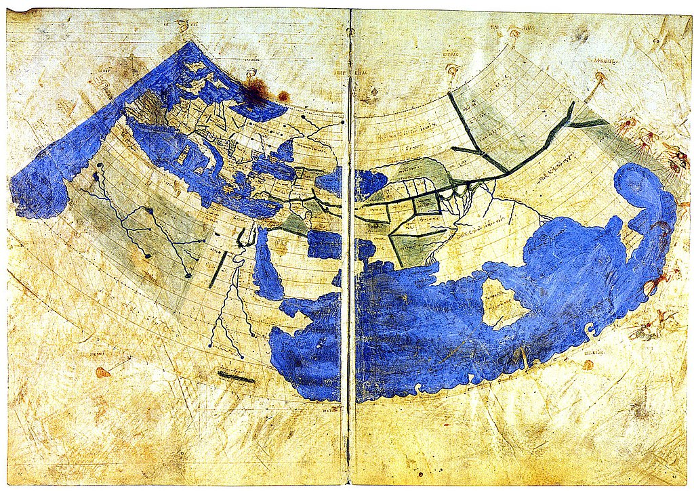
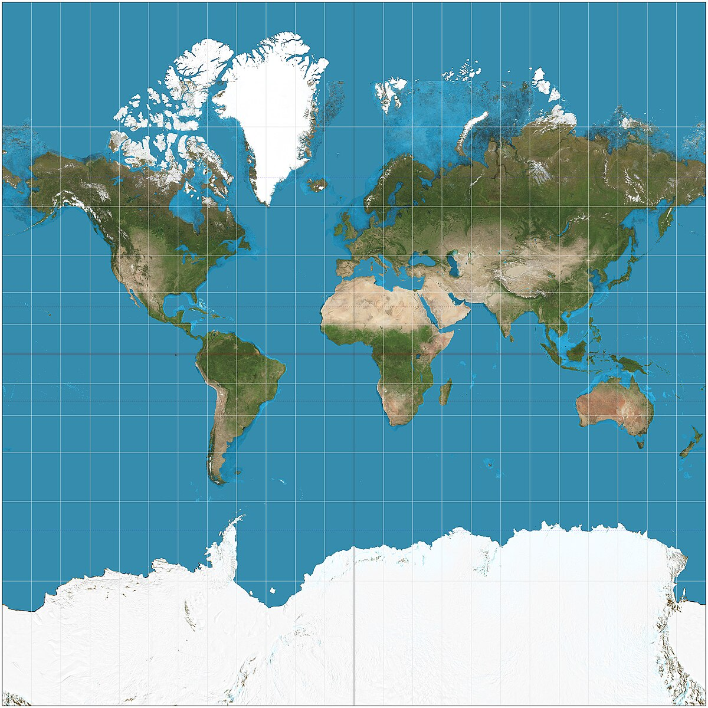
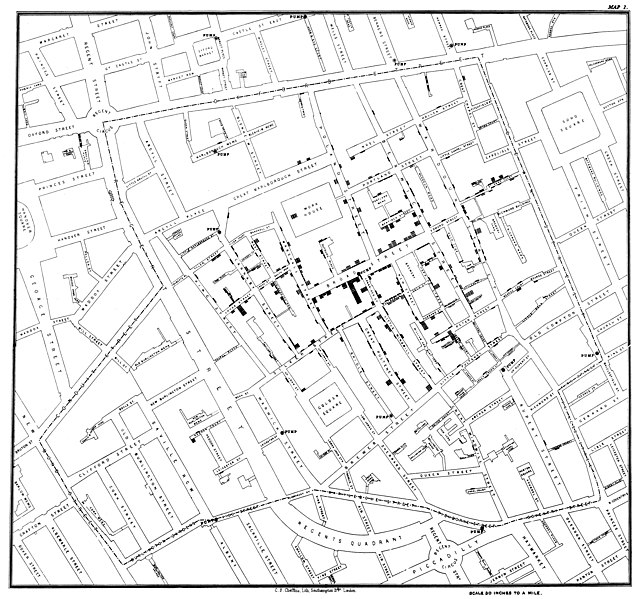
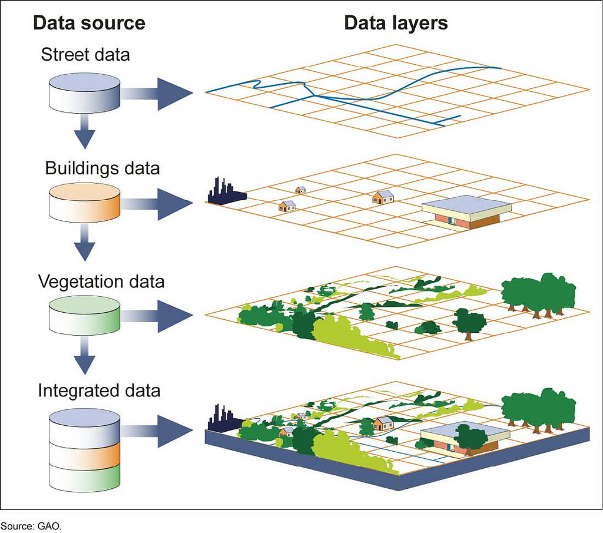

Cartography

Cartography is the science and art of creating maps. It involves the collection, analysis, and representation of spatial data to produce visual depictions of geographical areas. Cartographers utilize various tools and techniques to translate complex geographic information into comprehensible and functional maps. This process includes the selection of what features to include, the design of map symbols and scales, and the use of color and typography to enhance clarity and usability. Cartography not only aids in navigation and spatial understanding but also plays a crucial role in a wide range of fields, including urban planning, environmental management, and disaster response.
An illustrative example of cartography is the creation of a city street map. Suppose a city planner needs to design a new urban area. The cartographer starts by gathering geographic and demographic data about the region, including existing streets, landmarks, natural features, and land use patterns. Using Geographic Information Systems (GIS) and mapping software, the cartographer creates a detailed and accurate representation of the area. This map includes various layers, such as residential zones, commercial districts, and transportation routes. By incorporating visual elements like different colors for various land uses and symbols for landmarks, the cartographer ensures the map is user-friendly and informative. This map is then used by city planners to make informed decisions about infrastructure development, zoning regulations, and community services. The process highlights how cartography transforms raw geographic data into practical tools for planning and decision-making.
Urban and regional planning relies heavily on cartography to guide the development and management of land use. Planners use maps to visualize existing conditions, such as infrastructure, land use patterns, and environmental features, as well as to design future developments. For instance, when planning a new housing development, cartographers create detailed maps that illustrate the proposed layout of residential areas, roads, parks, and public facilities. These maps help planners make decisions about zoning, transportation, and resource allocation, ensuring that new developments are well-integrated into the existing urban fabric. By understanding cartography, planners can effectively communicate their plans to stakeholders, assess the potential impacts of new projects, and make informed decisions that contribute to sustainable and efficient urban growth.
In disaster response and management, cartography is crucial for effective emergency planning and response. Maps provide vital information about affected areas, including the extent of damage, the location of emergency services, and the movement of displaced populations. For example, during a natural disaster such as a hurricane or earthquake, cartographers create real-time maps that show the impacted regions, evacuation routes, and temporary shelters. These maps help emergency responders coordinate their efforts, allocate resources, and communicate critical information to the public. Learning cartography equips individuals and organizations with the skills to produce and interpret these essential maps, improving the efficiency and effectiveness of disaster response and recovery operations.
Environmental management and conservation benefit significantly from cartographic expertise. Maps are used to monitor and manage natural resources, track environmental changes, and plan conservation efforts. For instance, cartographers create detailed maps of protected areas, such as national parks and wildlife reserves, to monitor habitat changes, track species distributions, and assess the impact of human activities. These maps aid conservationists in identifying critical areas for protection, managing natural resources, and developing strategies to mitigate environmental degradation. By learning cartography, environmental professionals can produce accurate and informative maps that support conservation efforts, promote sustainable land use, and enhance environmental stewardship.
Topographic maps are detailed representations of the Earth's surface, illustrating both natural and human-made features. They use contour lines to depict elevation changes, showing the three-dimensional landscape on a two-dimensional plane. Topographic maps provide information about terrain, such as mountains, valleys, and plains, as well as features like rivers, lakes, and roads. For example, a topographic map of a hiking trail includes contour lines to help hikers understand the steepness of slopes and the layout of the trail. These maps are essential for outdoor activities like hiking, climbing, and land surveying, as they offer detailed spatial information that aids in navigation and planning. Topographic maps are often used in conjunction with other types of maps for comprehensive geographic analysis and outdoor recreation. More about Topographic Maps
Thematic maps focus on specific themes or subjects rather than general geographical features. They are designed to convey particular types of information, such as population density, climate zones, or economic activities. For example, a thematic map might show the distribution of different languages spoken across a country or the prevalence of various health conditions in different regions. These maps use colors, symbols, and shading to represent data and highlight spatial patterns related to the chosen theme. Thematic maps are valuable for research, policy-making, and public awareness, as they provide insights into various aspects of social, economic, and environmental issues. They are commonly used in fields like epidemiology, urban planning, and environmental studies. More about Thematic Map
Political maps illustrate the boundaries and political divisions of a region, such as countries, states, and municipalities. They focus on human-made features like borders, capitals, and major cities, and often include information on administrative divisions and governing structures. For instance, a political map of the United States shows the boundaries of each state, the location of the capital cities, and other key administrative areas. Political maps are essential for understanding geopolitical relationships, voting districts, and administrative regions. They are widely used in education, government planning, and international relations to provide a clear overview of political boundaries and territorial organization. More about Political Maps
Road maps provide detailed information about road networks, including highways, streets, and local roads. They are designed for navigation and travel, showing various transportation routes, points of interest, and services like gas stations and rest areas. For example, a road map of a city includes major streets, intersections, and landmarks, helping drivers find their way and plan routes efficiently. Road maps are commonly used by travelers, drivers, and logistics professionals to plan trips, navigate unfamiliar areas, and understand transportation infrastructure. They are available in printed form, as well as digital formats integrated into GPS and mapping applications for real-time navigation assistance. More about Road Maps
Climate maps illustrate the climatic conditions of different regions, providing information about temperature, precipitation, and other weather-related factors. These maps use color-coding and symbols to represent various climate zones and patterns. For example, a climate map might show the distribution of different climate types, such as tropical, arid, or temperate zones, across a continent. Climate maps are used in fields such as meteorology, agriculture, and environmental planning to understand climate patterns, assess weather-related risks, and make informed decisions about land use and resource management. They are valuable tools for studying the impacts of climate on ecosystems, agriculture, and human activities. More about Climate Maps
Map scale is a fundamental concept in reading maps and refers to the relationship between distances on the map and actual distances on the ground. It is usually represented as a ratio, such as 1:50,000, or as a graphical scale bar. For instance, a scale of 1:50,000 means that 1 unit on the map equals 50,000 of the same units on the ground. To interpret this, first, find the scale on the map, often located in the map legend. Use the scale to measure distances between points on the map with a ruler or a scale tool. This allows you to calculate real-world distances, which is crucial for navigation, planning trips, or understanding the extent of features depicted on the map.
Map symbols and legends are essential for understanding the information presented on a map. The legend, typically found in a corner of the map, explains what each symbol, color, and line represents. Symbols might indicate landmarks such as schools, hospitals, or parks, while different colors can represent various land uses, such as residential, commercial, or industrial areas. For example, on a topographic map, blue lines often signify rivers or streams, while contour lines represent elevation changes. To effectively read a map, familiarize yourself with the legend to decode these symbols and understand the map’s features. This will help you interpret the map’s content accurately and use it effectively for your purposes.
Directions and orientation are crucial for navigating and interpreting a map accurately. Maps are usually oriented with north at the top, though this can vary. A compass rose or directional arrow on the map will indicate the orientation. To use a map effectively, align it with your surroundings by matching the map’s north direction with the actual north direction using a compass or a GPS device. This helps you correlate features on the map with those in the real world. Additionally, understanding how to use map coordinates (latitude and longitude) or grid references will assist in pinpointing specific locations on the map and navigating effectively through unfamiliar areas.
Map features and terrain analysis involve interpreting the various elements shown on the map, such as landforms, roads, and landmarks. Topographic maps, for instance, use contour lines to depict elevation and landforms. Closely spaced contour lines indicate steep terrain, while widely spaced lines represent flat areas. Pay attention to additional features such as rivers, forests, and built structures, which can provide context for navigation and planning. By analyzing these features, you can gain a better understanding of the terrain and make informed decisions about travel routes, site selection, or environmental assessments.
Map grids and coordinates help locate specific points on a map with precision. Maps often include a grid system, such as latitude and longitude lines or alphanumeric grid references. To use these coordinates, find the grid system on the map, and match the coordinates of your location or destination. For example, a grid reference might be denoted as B4, indicating a specific square on the map. Coordinates in latitude and longitude can provide exact locations and are especially useful in navigation and cartography. Understanding how to read and use these grid systems is essential for accurate positioning and spatial analysis.
Ptolemaic cartography refers to the mapping work of Claudius Ptolemy, a Greek geographer and astronomer, whose seminal work, the Geographia, laid the foundation for modern cartography. Ptolemy's maps were groundbreaking for their use of latitude and longitude to accurately represent geographic locations. His systematic approach to map-making, based on detailed descriptions and mathematical calculations, influenced map-making for centuries. The Ptolemaic maps, while limited by the knowledge of their time, introduced principles of map projection and coordinate systems that are fundamental to cartography. Ptolemy’s work was rediscovered in the Renaissance and significantly impacted the development of European cartography. More about Ptolemaic Cartography
The Mercator projection was developed by the Flemish cartographer Gerardus Mercator and is one of the most influential innovations in the history of cartography. Mercator’s projection presented the globe’s surface on a flat map, preserving angles and shapes, which made it highly useful for maritime navigation. The projection works by distorting size, particularly near the poles, but it allows sailors to plot straight-line courses, or rhumb lines, which are critical for navigation. The Mercator projection revolutionized navigation and map-making, and despite its distortions, it remains widely used in various applications, particularly in navigation and online maps. More about Core-Perihery Model
Thematic mapping emerged as a significant advancement in cartography in the 19th century, with key contributions from cartographers like John Snow and his work on cholera maps. John Snow’s cholera map of London in 1854 was a pioneering example of thematic mapping, where spatial data on disease outbreaks was used to identify the source of an epidemic. This approach demonstrated how maps could be used to visualize and analyze specific themes or data sets, such as population density, economic activity, or health statistics. Thematic mapping has since become a critical tool in various fields, including epidemiology, urban planning, and environmental science. More about John Snow
The development of Geographic Information Systems (GIS) marked a revolutionary advancement in cartography and spatial analysis. GIS integrates hardware, software, and data for capturing, managing, and analyzing geographic information. Early pioneers like Roger Tomlinson, often considered the "father of GIS," contributed to the development of early GIS systems for managing land use data in Canada. GIS technology has since evolved to enable complex spatial analyses and interactive mapping, transforming how cartographers, urban planners, and researchers analyze and visualize spatial data. The integration of GIS with digital mapping and remote sensing has profoundly impacted various fields, including environmental management, transportation planning, and disaster response. More about GIS
The creation of thematic atlases in the 20th century significantly advanced the field of cartography by providing comprehensive and specialized maps on various subjects. Notable examples include the Times Atlas of the World and the National Geographic Atlas of the World. Thematic atlases compile a wide range of maps and spatial data on themes such as climate, demographics, and geopolitical changes, offering in-depth insights into specific topics. These atlases combine cartographic expertise with thematic research, making them valuable resources for education, research, and policy-making. The development of thematic atlases reflects the growing complexity and specialization in cartographic practices and the increasing demand for detailed and subject-specific geographic information.
One of the key problems in contemporary cartography is ensuring accuracy and precision in digital mapping. With the increasing reliance on digital maps and Geographic Information Systems (GIS), the need for high accuracy in spatial data has become critical. Errors in data collection, integration, and representation can lead to significant issues, such as incorrect navigation, flawed urban planning, or misinformed policy decisions. For instance, inaccuracies in digital elevation models can affect flood risk assessments and disaster preparedness. To address this problem, cartographers need to develop and implement more rigorous standards for data verification and validation, enhance data collection techniques using advanced technologies like LiDAR and satellite imagery, and continually update and maintain digital maps to reflect changes in the real world.
Handling and representing complex data is another pressing issue in cartography. Modern maps often need to incorporate diverse and voluminous data sets, such as climate data, demographic statistics, and real-time traffic information. Effectively visualizing this data in a way that is both comprehensible and useful for various users presents a significant challenge. For example, representing multi-dimensional data on a two-dimensional map can lead to cluttered and confusing maps if not managed well. To resolve this, cartographers must innovate new visualization techniques and interactive mapping tools that allow users to explore and interpret complex data more intuitively. Advanced data visualization technologies and user-centric design approaches can help create maps that are both informative and accessible.
Geospatial data privacy and security are critical concerns in the modern cartographic landscape. As maps increasingly integrate personal and sensitive information, such as location data from smartphones and social media, protecting this data from misuse or unauthorized access becomes crucial. For example, detailed maps of residential areas or individual movements can raise privacy issues and security risks. Addressing these concerns involves developing and enforcing robust data protection policies, implementing secure data storage and transmission methods, and ensuring compliance with privacy regulations. Cartographers and data managers must work closely with cybersecurity experts to safeguard geospatial data and maintain user trust.
Equity and bias in mapping present significant challenges, especially in the representation of marginalized communities and regions. Historically, maps have sometimes perpetuated biases and excluded certain perspectives, leading to skewed or incomplete representations of various areas. For instance, the underrepresentation of low-income neighborhoods in urban planning maps can result in inadequate services and resources. To tackle this problem, cartographers need to adopt inclusive practices that ensure diverse and accurate representation. This includes engaging with local communities, incorporating multiple viewpoints, and being transparent about the data sources and methods used in map creation. By addressing bias and promoting equity, cartographers can produce maps that better reflect and serve all populations.
Environmental impact is a growing concern in cartography, particularly with the use of resources and energy in producing physical maps and operating digital mapping systems. The production of paper maps requires natural resources and generates waste, while digital mapping systems consume significant amounts of energy, especially with large-scale data centers. To mitigate these environmental impacts, cartographers and map producers need to adopt more sustainable practices. This includes using recycled materials for physical maps, improving the energy efficiency of data centers, and promoting digital solutions that reduce the need for printed materials. Emphasizing sustainability in cartographic practices can help reduce the environmental footprint and contribute to broader efforts in environmental conservation.
The contributions of ancient cartographers, such as the Babylonians, Greeks, and Chinese, played a crucial role in shaping the early development of cartography. For instance, the Babylonian clay tablet known as the "Imago Mundi," dating back to around 600 BCE, is one of the oldest known maps. It provides a perspective on how ancient civilizations conceptualized their world, reflecting their geographical knowledge and cultural understanding. The Greek scholar Ptolemy's work in the 2nd century AD, particularly his use of latitude and longitude, laid the groundwork for modern mapping techniques. Despite their rudimentary tools, these early cartographers developed foundational principles and methods that influenced future map-making and geographical understanding.
Map projections are a crucial but often overlooked aspect of cartography. Since the Earth is spherical, translating its surface onto a flat map involves distortions. Various map projections, such as the Mercator, Robinson, and Winkel Tripel projections, address these distortions in different ways, each with its strengths and limitations. For example, the Mercator projection preserves angles, making it useful for navigation, but distorts size, especially near the poles. Understanding these projections and their trade-offs is essential for interpreting maps correctly and for choosing the appropriate projection based on the map’s intended use. This knowledge helps in making informed decisions in fields such as navigation, urban planning, and environmental management.
Cartography has historically been used as a tool for political propaganda, shaping public perception and reinforcing power structures. For example, during the 19th and early 20th centuries, maps were often used to justify colonial expansion and depict territories in a way that supported imperialist agendas. The portrayal of borders, natural resources, and the layout of regions could be manipulated to serve political objectives, sometimes leading to biased or misleading representations. Understanding this aspect of cartography highlights the importance of critical analysis when interpreting historical maps and underscores the need for transparency and objectivity in modern cartographic practices.
The advent of interactive and real-time mapping technologies represents a significant leap in cartographic capabilities. Modern tools, such as Google Maps and GPS systems, offer dynamic, real-time updates that enhance navigation and spatial awareness. These technologies integrate various data sources, including satellite imagery, traffic conditions, and user-generated content, to provide up-to-date information. For instance, real-time traffic maps help drivers avoid congestion by providing live updates on road conditions. The development and widespread adoption of these technologies have transformed how people interact with maps, making them more interactive, personalized, and responsive to real-world changes.
The evolution of cartographic accuracy has been profoundly influenced by satellite technology. The launch of the first artificial satellites, such as Sputnik in 1957, marked the beginning of a new era in map-making. Satellites provide high-resolution imagery and precise geospatial data, allowing cartographers to create more accurate and detailed maps. For example, Landsat satellites have been instrumental in monitoring environmental changes, such as deforestation and urban expansion, over time. The ability to capture and analyze data from space has revolutionized cartography, enabling detailed and accurate representations of the Earth's surface and enhancing our understanding of global phenomena.
1. How did the Hubble Deep Field observation in 1995 change our understanding of the universe?
2. Describe one contribution of ancient Babylonians to early astronomy.
3. Explain the impact of the Islamic Golden Age on the development of astronomy during the medieval period.
4. How did the heliocentric model proposed by Copernicus revolutionize our understanding of the solar system?
5. What are some of the key research areas in contemporary astronomy, and why are they significant?